|


|
Ik had nog zo gezegd geen bommetje
» exacte locatie
 De laatste twee dagen hebben we heel hard doorgezeild. Door een lagedrukgebied dat langskwam kregen we oostenwind waarmee we vanaf Sardinie zo naar de westkant van Corsica zijn gevlogen. Nu zijn we ineens al op weg naar het vasteland van Frankrijk.
De laatste twee dagen hebben we heel hard doorgezeild. Door een lagedrukgebied dat langskwam kregen we oostenwind waarmee we vanaf Sardinie zo naar de westkant van Corsica zijn gevlogen. Nu zijn we ineens al op weg naar het vasteland van Frankrijk.
Het is donker buiten. De maan is al weer onder, maar er is nog aardig wat licht van de vele sterren. Rondom ons zijn wat onweerswolken die af en toe een flits laten zien. Vanochtend was de zee aardig ruw. Een overblijfsel van dat lagedrukgebied. Maar nu is alles weer rustig. Wind is er maar weinig. Het zeil staat wel, maar de motor is ook aan. Binnen in de floephoek ligt Siebe heerlijk ontspannen in zijn slaapzakje te slapen. Ilse ligt naast hem, ook heerlijk te slapen. Ik heb net koffie voor mezelf gezet en buiten opgedronken. Dit is onze laatste nacht op zee. We zijn ik weet niet hoeveel nachten op zee geweest tijdens deze reis en nu is het ineens de laatste. De eerste mijlpaal in het afsluiten van de reis. Het is vreemd te bedenken dat onze levensstijl van de afgelopen vier jaar binnenkort gaat worden ingeruild voor huisje-boompje-beestje in Nederland. We kijken echt uit naar de gemakken en ruimte van een huis en het dichtbij hebben van familie en vrienden. Maar er is ook enige onzekerheid. Tijdens deze reis rolden we van de ene in de andere situatie. Soms makkelijk, soms moeilijk, maar altijd afwissselend. Gaat ons toekomstige leven net zo interessant worden?
De volgende middag hebben we onze bestemming, het eiland Porquerolle, in zicht. Vannacht gingen we maar langzaam, maar we schieten nu lekker op met stroom mee. Dan vliegt er een helicopter laag over. Even later hangt hij boven ons, een kartonnetje ophoudend met daarop 'VHF 16'. Het blijkt de Franse marine te zijn. Via de marifoon krijgen we te horen dat we in een gevaarlijk gebied varen. We moeten onze koers wijzigen naar pal zuid en wachten op instructies. We hebben er geen zin in, maar gehoorzamen uiteraard braaf. Na twintig minuten horen we ineens 'poef' buiten. Aan de horizon een kromme sliert rook. Typisch Frankrijk, even een raketje testen. We worden weer opgeroepen en mogen onze oude koers hervatten.
|
|
|

Sardinie
» exacte locatie
Na drie nachten op zee zijn we aangekomen op Sardinie. Het anker laten we vallen in een prachtig blauw stuk water. Siebe vermaken onderweg vinden we steeds lastiger worden maar gelukkig zijn daar de Teletubbies. Siebe vindt ze helemaal geweldig en op zee is het mooi vermaak. Siebe heeft het er de halve dag over 'kijk Ties?' of iets indirecter 'Ties leuk!' en dan zelf al ja knikken. Maar nu we er zijn zet Joost snel de bijboot in elkaar zodat we met Siebe naar het strandje kunnen. Wat kan hij daar heerlijk zelf spelen.
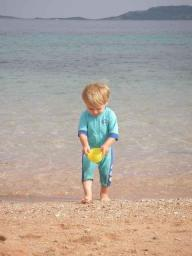
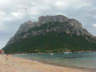
|
|
|
Isola Vulcano
» exacte locatie
Het stinkt in de boot naar rotte eieren. Dat komt omdat we naast een vulkaan geankerd liggen. Er komen zelfs vieze bubbels omhoog in de zee vlak bij ons. Aan het strand is een blubberbad dat Ilse geprobeerd heeft. Ik ga daar voor mijn plezier niet in. Wel ben ik op een ochtend die vulkaan op gerend en dat was de moeite wel waard. Siebe experimenteert met alternatieve toegang tot de kajuit.
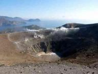
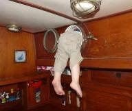
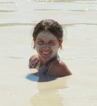
|
|
|
Sailtales
» exacte locatie
Dit verhaaltje is vooral bestemd voor lezers van deze website die zelf ook zeilen. Het gaat over Sailtales. Sailtales is een project dat ik een paar maanden terug ben gestart om de uitwisseling van informatie onder zeilers te verbeteren. Iedereen heeft natuurlijk de pilotboeken aan boord, maar deze zijn soms jaren oud en bevatten ook niet alle informatie die je nodig hebt. Daarom wordt er heel wat extra informatie via emailtjes en radionetjes uitgewisseld. Helaas blijft dat beperkt tot groepjes bevriende zeilers. Het leek mij veel mooier als zonder extra moeite iedereen van die informatie kan profiteren. Vandaar dat ik het Sailtales systeem heb opgezet.
Het basisidee is eenvoudig. Via een email aan het systeem geef je door in welk gebied je aan het zeilen bent. Er worden doorlopend Sailtales rapporteren gepubliceerd door andere zeilers. Deze rapporten zijn voorzien van GPS coordinaten. Ieder nieuw rapport dat binnen het door jou opgeven zeilgebied valt krijg je automatisch per email toegestuurd. Hierdoor ontvang je alleen de voor jou relevante informatie. Als je je zeilgebied doorgeeft of wijzigt krijg je ook automatisch een overzicht toegestuurd van titels van rapporten die al eerder gepubliceerd waren. Deze zijn naar wens los op te vragen. Alle informatie blijft dus ook beschikbaar voor toekomstige zeilers.
Er zijn op dit moment een heel aantal zeilers op verschillende lokaties ter wereld die enthousiast rapporten insturen en ontvangen. Uiteraard geldt hoe meer deelnemers hoe beter. Als je geinteresseerd bent in informatie over jouw zeilgebied, stuur dan een mailtje naar sailtales@janharing.nl. Laat het onderwerp LEEG en zet in het bericht de volgende regel:
subscribe 40N,5E,60N,25E
Dit abonneert je op het rechthoekige gebied van 40N tot 60N en van 5E tot 25E. Coordinaten uiteraard aanpassen aan het gewenste zeilgebied.
Zelf rapporten insturen is natuurlijk mogelijk, maar dit is geen voorwaarde om mee te kunnen doen. Meer informatie hierover kan worden verkregen door een leeg mailtje met leeg onderwerp naar sailtales@janharing.nl te sturen.
Sailtales is een niet-commercieel project en geheel gratis te gebruiken.
|
|
|
Taormina op Sicilie
» exacte locatie
We kunnen de hele nacht rustig zeilen met nauwelijks golven. Voor de
ochtend is een windkracht vijf voorspeld waar we blij mee zijn omdat
we dan wat meer snelheid krijgen. Inderdaad, de wind trekt aan. Alleen
schiet hij helaas iets verder door. Eind zes, begin zeven is wat we
krijgen. Dat is even wat minder. Na mijn zeeziekte een week geleden
ben ik gelukkig goed voorbereid. Gisteravond had ik alvast een
zeeziektepil genomen voor het geval dat. En met de wilde golven waar
we nu in terecht komen werkt dat uitstekend. Ik neem er nog maar
eentje voor de zekerheid. Het probleem is dat als je eenmaal zeeziek
bent, je maag stopt met doorgeven van zijn inhoud naar de darmen.
Eenmaal in die fase blijft zo'n zeeziektepil dus in je maag
rondzwemmen zonder iets te doen. Hooguit komt hij via dezelfde weg als
hij erin is gekomen weer naar buiten. Maar goed, dat is nu allemaal
niet van toepassing op mij. Siebe's bewegingsvrijheid moeten we jammer
genoeg nog verder beperken tot alleen zijn floephoek. Het is nu te
ruig voor hem om door de boot te wandelen. We pakken weer een nieuw
boek uit de voorraad. Het grote kastelen kijk- en zoekboek. Hij is
vooral enthousiast over de spoken in het kasteel. Van zeeziekte geen
spoortje te bekennen bij ons kleintje.
Aan het eind van de dag hebben we het ergste gehad en beginnen wind en
golven af te nemen. Het laatste etmaal van de tocht verloopt rustig
met afwisselend zeilen en motorren. Vlak voor het donker wordt kunnen
we ons anker laten vallen bij het plaatsje Taormina op Sicilie. Siebe
slaapt net en wij borrelen nog even om de aankomst te vieren. Ondanks
dat we al heel vaak aangekomen zijn blijft dit een mooi moment. Even
genieten van de voldoening weer een stapje verder te zijn gekomen.
Het is zeker geen slechte plek om te liggen. De omgeving ziet er
prachtig uit met hoge bergen vol gekleurde gebouwtjes. Op de
achtergrond is de Etna te zien. 's Ochtends pakken we de bus naar het
oude centrum van de stad boven op de berg. Het is allemaal weer zo
stijlvol hier. Dit is wat je in Europa krijgt en waar je op de rest
van de wereld goed voor moet zoeken. Siebe legt wat contacten met
kinderen van zijn leeftijd. Meestal krijgt hij van een van de ouders
dan een koekje en rent er dan direct mee weg. We gaan een van de
Italiaanse ijstenten binnen. De keuze is uit small, medium, large of
king. We kiezen 'small' en het formaat daarvan komt overeen met het
grootste dat je in Nederland zo'n beetje kan krijgen. We hebben
niemand 'king' zien bestellen en het blijft een raadsel hoe ze dat
constructief op zo'n hoorntje krijgen. De smaak van het ijs is
verrukkelijk. Eigenlijk heb ik het nog nooit beter geproefd. Daarna
valt Siebe in slaap en maken wij van de gelegenheid gebruik om ergens
rustig een pizza te bestellen als lunch. Ook de pizza smaakt
voortreffelijk. Ze weten hier zeker wel hoe ze hun nationale gerechten
eer aan moeten doen.
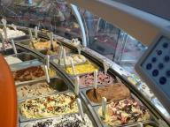
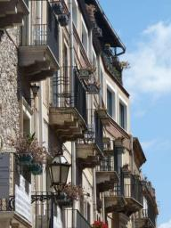
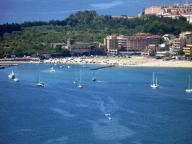
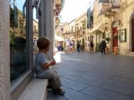
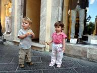
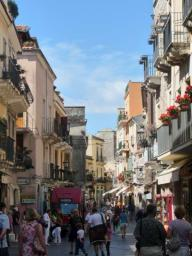
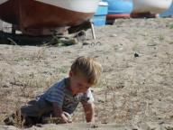
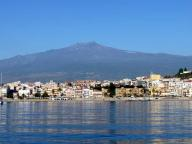
|
|
|

|

|
|
|